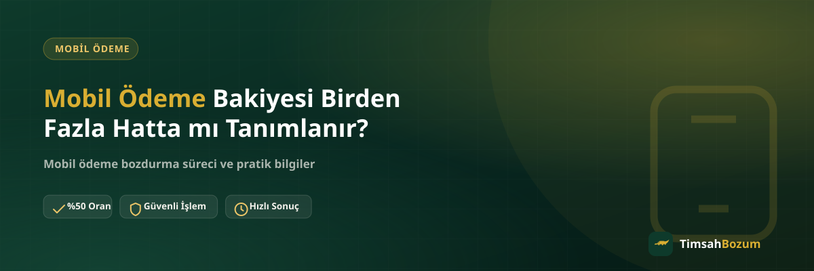

Birden fazla hattı olan kullanıcılar sık sık şunu merak ediyor: mobil ödeme bakiyesi tüm hatlarda ortak mı çalışıyor, yoksa her hat kendi bakiyesini mi taşıyor? Bu ayrımı bilmemek, hem bakiyeni yanlış yerde aramana hem de bozum işlemine hangi bilgiyi vereceğini karıştırmana yol açabilir. Bu yazıda hattın bakiyeyle ilişkisini ve birden fazla hattaki bakiyeyi nasıl değerlendirebileceğini anlatıyoruz.
Mobil Ödeme Bakiyesi Hatta Nasıl Bağlıdır?
Mobil ödeme, bir hattın operatör nezdindeki abonelik kaydına tanımlanan bir harcama imkânıdır. Bu yüzden bakiye kişiye değil, doğrudan o hatta bağlı olarak oluşur. Aynı kimlik üzerine kayıtlı birden fazla hat olsa bile, her hattın mobil ödeme geçmişi ve bakiyesi operatör tarafında ayrı ayrı tutulur. Bir hattaki hareket diğer hattı otomatik olarak etkilemez.
Aynı Operatörde İki Hattım Varsa Bakiyeler Birleşir mi?
Hayır. Aynı operatörü kullanan iki farklı hattın olması, bakiyelerin ortak bir havuzda toplandığı anlamına gelmez. Her hat kendi SIM kartı ve abonelik numarasıyla izlendiği için bakiyeler ayrı ayrı görüntülenir ve ayrı ayrı yönetilir. Bir hatta biriken bakiyeyi kontrol ederken diğer hattın bakiyesini de aynı ekranda görmen beklenmemeli; genelde her hat için ayrı sorgulama gerekir.
Farklı Operatörlerdeki Hatlarda Durum Değişir mi?
Farklı operatörlere ait hatların bakiyeleri zaten baştan birbirinden bağımsızdır, çünkü her operatör kendi altyapısını ve kayıt sistemini kullanır. Örneğin bir Vodafone hattındaki mobil ödeme bakiyesiyle bir Türk Telekom hattındaki bakiye hiçbir şekilde ilişkilendirilmez. Bu durum bozum tarafında da geçerli: mobil ödeme bozdurma işleminde her hattın bakiyesi kendi operatörüne göre ayrı bir işlem olarak değerlendirilir.
Bir Hattaki Bakiyeyi Başka Hatta Aktarabilir miyim?
Mobil ödeme bakiyesi hattın kendi abonelik hareketine bağlı oluştuğu için, hatlar arasında doğrudan bir bakiye aktarımı standart bir işlem olarak sunulmaz. Böyle bir aktarımın mümkün olup olmadığı ve hangi koşullarda yapılabileceği tamamen operatörün kendi politikasına bağlıdır; bu konuda en güncel ve kesin bilgiyi ilgili operatörden almak gerekir. TimsahBozum olarak biz hatlar arası bakiye transferi yapmıyoruz, sadece mevcut bakiyenin bozdurulması hizmetini sunuyoruz.
Birden Fazla Hattaki Bakiyeyi Tek Seferde Bozdurabilir miyim?
Evet, birden fazla hattın bakiyesini aynı anda değerlendirmek istiyorsan bunu tek bir WhatsApp mesajında toplu şekilde bildirebilirsin. Her hattın güncel bakiyesini gösteren ayrı bir ekran görüntüsü paylaşman yeterli; işlem her hat için kendi oranı üzerinden ayrı ayrı hesaplanır. Bunu tek tek, aralıklı mesajlar halinde göndermek yerine bir arada iletmek süreci hızlandırır.
Hangi Hattaki Bakiyeyi Bozduracağımı Nasıl Belirtmeliyim?
Birden fazla hattın varsa, mesajında hangi operatöre ait hangi hattın bakiyesini bozdurmak istediğini net şekilde belirtmen karışıklığı önler. Örneğin "Vodafone hattımda 300 TL, Türk Telekom hattımda 150 TL bakiye var" gibi bir açıklama, her iki ekran görüntüsüyle birlikte gönderildiğinde işlemi ilk mesajdan itibaren netleştirir.
Aile Hattı veya Ek Hatlarda Durum Farklı mı?
Aynı paket veya tarife altında yer alan aile hatları ya da ek hatlar da operatör tarafında kendi abonelik numarasıyla kayıtlıdır. Bu yüzden bu tür hatlarda oluşan mobil ödeme bakiyesi de o hatta özeldir, ana hatla veya paketteki diğer hatlarla otomatik olarak birleşmez. Bir ek hattın bakiyesini bozdururken de aynı şekilde o hatta ait güncel ekran görüntüsünü paylaşman gerekir.
Numaramı Taşırsam (Operatör Değiştirirsem) Bakiyem Ne Olur?
Numara taşıma (MNP) ile bir hattı başka bir operatöre geçirdiğinde, hattın kimlik numarası aynı kalsa da abonelik kaydı yeni operatörün sistemine aktarılır. Mobil ödeme bakiyesinin bu geçişten nasıl etkileneceği, taşıma sırasında hesaplanan güncel bakiyeye ve yeni operatörün kendi politikalarına bağlıdır; bu detayı kesin olarak öğrenmenin en doğru yolu, taşıma işleminden önce mevcut ve yeni operatörden bilgi almaktır. Elinde hâlâ bakiye varsa ve taşıma öncesi bunu değerlendirmek istiyorsan, güncel ekran görüntünü paylaşarak bozum işlemini taşımadan önce tamamlayabilirsin.
Kullanmadığım Bir Hattaki Bakiyeyi Unutmamak İçin Ne Yapmalıyım?
Birden fazla hattı olan kullanıcıların en sık düştüğü durum, ikinci veya üçüncü bir hatta biriken bakiyeyi tamamen unutmak. Her hattı ayrı ayrı kontrol etmek zaman alsa da, özellikle az kullanılan bir hattın mobil ödeme bakiyesini periyodik olarak sorgulamak, bu bakiyenin boşuna beklemesini önler. Bir hatta ait bakiyeyi fark ettiğinde onu hemen değerlendirmek istersen, o hatta ait güncel ekran görüntüsünü paylaşman yeterli; bakiyenin hangi hatta ait olduğunu ilk mesajında belirtmen sürecin doğru işlemesini sağlar.
İlgili Yazılar
- Mobil Ödeme Bakiyesi Nedir, Nasıl Oluşur?
- Faturalı ve Faturasız Hatlarda Mobil Ödeme Bozdurma Farkı
- Hangi Operatörlerde Mobil Ödeme Bozdurma Yapılıyor?
Özetle, mobil ödeme bakiyesi hatta özel bir değerdir; birden fazla hattın olsa bile bakiyeler otomatik olarak birleşmez veya aktarılmaz, her biri kendi başına takip edilir. Birden fazla hattaki bakiyeni değerlendirmek istersen, her hattın güncel ekran görüntüsüyle WhatsApp hattımıza yazarak oranları teyit edip işlemini başlatabilirsin.